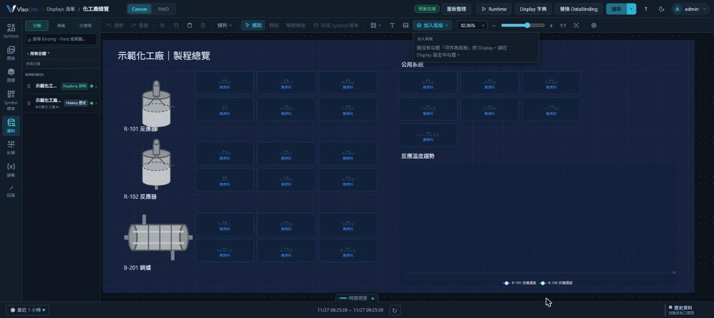
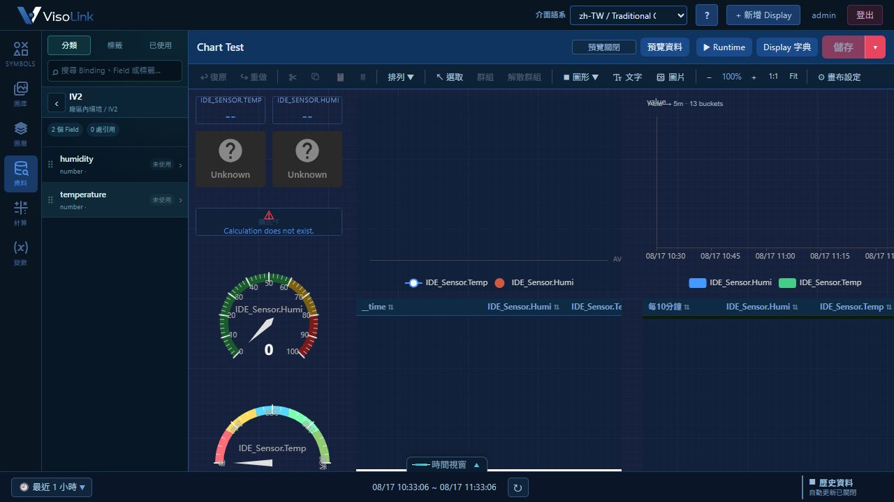
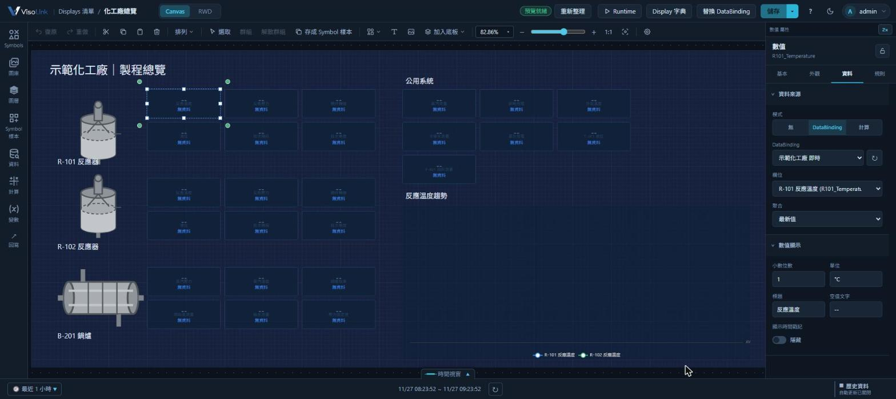
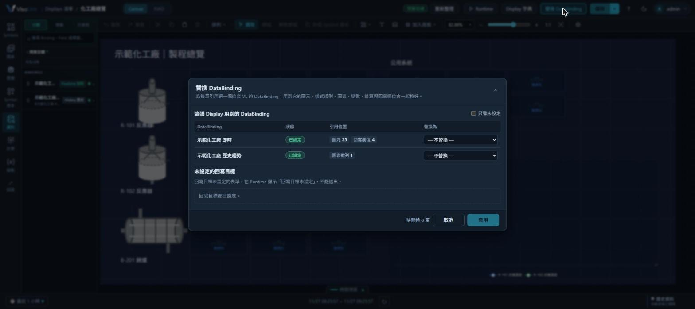
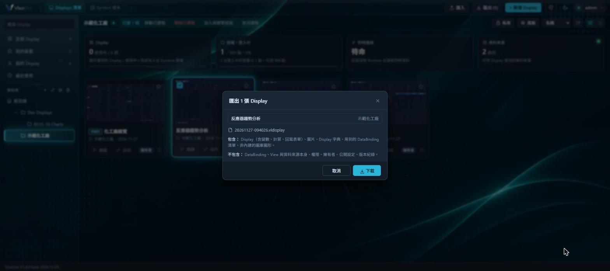
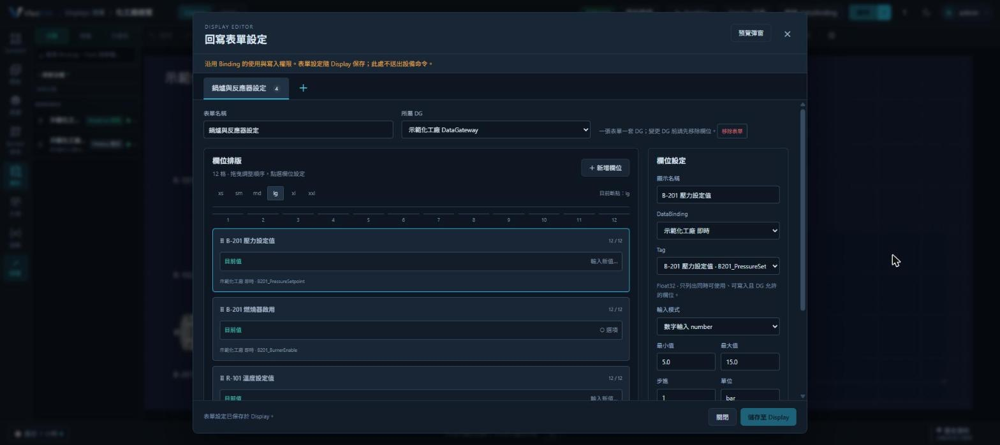

COURSE 03 · DATA
DataBinding
& DataBrowser
找到正確資料，建立可理解、可追蹤、可驗證的畫面綁定；並能一次替換資料、在系統之間搬移畫面、設定設備回寫表單。
Studio 設計人員建議 120 分鐘先備：Course 02對應 VisoLink 1.4.0-beta
LEARNING OUTCOMES
完成後，不只會選資料，還能證明選得正確
01理解結構
分辨 DataSource、View、DataBinding 與 Field，以及 Realtime 即時與 History 歷史。
02快速定位與綁定
使用分類、標籤、搜尋與已使用找到資料，套用到相容的 Symbol。
03維護與搬移
一次替換整張 Display 的 DataBinding；匯出、匯入到另一套 VisoLink。
04回寫與除錯
設定回寫表單；依固定順序檢查型別、時間、權限及資料狀態。
DATA HIERARCHY
先知道每一層負責什麼
1DataSource平台與外部系統的連接
2View整理後可使用的資料集合
3DataBinding設計者可重用的資料定義
4Field實際綁定的欄位
5Symbol Property被資料驅動的畫面屬性
設計者的責任：從可用的 DataBinding 與 Field 建圖；若資料語意、單位或時間定義不清楚，應向資料管理者確認，不應自行猜測。DataGateway 即時資料走同樣的層級（即時來源 → 即時 View → 即時 DataBinding），由管理者在 Course 05 建立。
BROWSER MODES
同一批資料，可以用三種角度瀏覽
分類
依管理者設定的節點階層逐層縮小範圍；適合從工作情境出發。
標籤
依管理者設定的標籤尋找資料；適合跨分類的共同特性。
已使用
只顯示目前 Display 實際引用的 Binding、Field 與引用次數。
不知道正式名稱時先走分類；知道關鍵字時直接搜尋；維護既有畫面時先看「已使用」。資料面板只列出目前帳號有權限使用的資料。
CATEGORY BROWSER
沿著現場語意逐層定位資料

分類模式依節點階層列出 Bindings；每個 Binding 標示 Realtime 即時或 History 歷史，並以燈號顯示狀態。- 確認目前層級依區域、產線或設備逐層進入。
- 看資料類型Realtime 或 History 決定適合的元件。
- 看燈號狀態異常的 Binding 先向管理者確認。
- 點「›」查看欄位、資料型別、單位及目前引用次數。
REALTIME vs HISTORY
即時與歷史是兩種資料，選元件前先分清楚
Realtime 即時DataGateway 即時 DataBinding
只顯示現在的值，不受時間範圍影響。
- 適合：數值、狀態、儀表、進度等顯示目前值的元件
- 回寫表單只能使用即時 DataBinding
History 歷史一般 DataBinding
依時間範圍查詢；來源包含資料庫、時序資料庫、VisoLink DataGateway 歷史等。
- 適合：趨勢、表格、長條圖、和弦圖等依時間範圍彙整的元件
- 可用於 Variable、Calculation 與 Time Marker 分析
Editor 預覽：「預覽資料」載入的是時間視窗內的歷史快照，即時資料在 Editor 預覽中顯示「無資料」屬正常；請開啟 Runtime 確認即時值。
SEARCH
搜尋的是 Binding、Field 或標籤，不只是畫面文字
01使用最小有效關鍵字
可由設備名稱、測點名稱或欄位語意開始。
查看完整所在路徑
同名 Field 可能存在於不同設備或資料來源。
核對型別、單位與資料類型
名稱相似不代表可以互換；即時與歷史也不能混用。
確認資料責任
無法判斷時向管理者確認 View 與 Binding 定義。
常見錯誤：搜尋到 Temperature 就直接使用，卻沒有確認它屬於哪台設備、使用哪個單位或時間來源。
FIELD
進入 Binding 後，再選擇真正需要的 Field

點 Binding 右側「›」查看欄位：名稱、型別、單位及目前引用次數。（此圖為早期版本畫面，欄位資訊相同。）- 確認 Field 名稱與業務意義
- 確認 number、text、boolean 或 date/time 等型別
- 確認即時值、歷史序列或計算結果的用途
- 查看是否已被目前 Display 引用
- 綁定前確認單位、小數及合理值域
DATA TYPES
資料型別會限制適合的 Symbol 與屬性
Number
數值、儀表、趨勢、門檻、聚合及計算。
Text
名稱、批號、說明與離散狀態文字。
Boolean
運轉／停止、開／關等二元狀態；回寫表單以單選輸入。
Date / Time
事件時間、資料時間與更新時間；需確認時區。
型別不匹配：不是把資料硬塞進元件，而是重新確認 Field、Symbol 或轉換邏輯是否選錯。
DRAG TO APPLY
拖曳是把資料套用到既有的相容 Symbol，不會自動建立元件
1先建立元件數值、趨勢、表格、狀態、儀表等
2找到 Binding／欄位核對路徑與語意
3按住「⠿」拖曳拖到目標 Symbol 上
4看到可接受提示放開完成套用
5確認資料屬性欄位、系列或欄位清單
不接受一般 Binding／欄位
圖片、文字、iFrame 與 Sankey；請改在屬性中設定。
Calculation 可拖曳到
數值、圖形、儀表、狀態與進度。
在空白畫布放開不會產生元件；這是 VisoLink 1.4 的正式行為，請先建立相容元件再拖曳。
MANUAL BINDING
既有 Symbol 可從「資料」分頁指定資料來源

數值「資料」分頁：模式選 DataBinding，選擇 DataBinding、欄位（顯示「中文名稱 (欄位代碼)」）與聚合，再設定數值顯示。- 模式DataBinding 或計算。
- 來源選擇正確的 DataBinding。
- 欄位未選時提示「還沒選欄位，Runtime 會顯示空值文字」。
- 聚合與預覽最新值、平均、最大、最小等，再開預覽確認。
SERIES & PROPERTIES
資料不只驅動數值，也驅動系列、欄位與外觀
 趨勢「系列」分頁：每條系列設定名稱、DataBinding、欄位、Y 軸（左軸／右軸）、繪製方式、顏色與線寬。
趨勢「系列」分頁：每條系列設定名稱、DataBinding、欄位、Y 軸（左軸／右軸）、繪製方式、顏色與線寬。內容
數值、表格欄位、趨勢系列；用「＋新增系列」「新增欄位」逐一設定。
外觀規則
依資料改變顏色或樣式，例如溫度過高時數值變紅。
狀態
共用／各狀態資料、比對條件與樣式。
流量圖
和弦圖以節點樹與「DataBinding Tag 序列」設定。
每一項綁定都要能回答：來源是什麼、是即時還是歷史、無資料時如何呈現。
USED IN DISPLAY
維護既有 Display 時，先盤點實際引用
 「已使用」模式集中顯示目前 Display 引用的 Binding、Field 與引用次數。（此圖為早期版本畫面，功能相同。）
「已使用」模式集中顯示目前 Display 引用的 Binding、Field 與引用次數。（此圖為早期版本畫面，功能相同。）- 快速確認 Display 依賴哪些 Binding
- 比較引用 Field 數量及使用次數
- 找出準備修改的資料是否影響多個 Symbol
- 清理不再需要的綁定前先確認引用
- 要整批更換時改用「替換 DataBinding」
DISPLAY SAFELY
資料正確之外，也要避免例外狀態造成誤判
格式
小數位、日期與時間格式應符合使用情境；可開啟「顯示時間戳記」。
單位
數值、儀表等元件可沿用欄位的單位，不只在標題中自行補字。
空值
設定空值文字，例如「--」或「無資料」，不以 0 取代。
無權限
安全隱藏資料並保留可辨識狀態，不顯示殘留值。
歷史資料注意：沒有剛好落在查詢時間點的值，不等於整段時間都沒有資料；需理解查詢與對齊方式。
REPLACE DATABINDING
替換 DataBinding：一次更換整張 Display 使用的資料

表格列出這張 Display 用到的 DataBinding、狀態與引用位置（圖元、回寫欄位、圖表數列）；在「替換為」選新的 DataBinding。- 開啟標題列「替換 DataBinding」。
- 逐列檢查狀態與引用位置；可勾「只看未設定」。
- 選擇替換「— 不替換 —」代表不變；檢查「未設定的回寫目標」。
- 套用並儲存確認「待替換 N 筆」後點「套用」，再儲存 Display。
適用情境：複製畫面到另一條產線，或匯入後補上未設定的資料。圖元、樣式規則、圖表、變數、計算與回寫欄位會一起換好。
EXPORT & IMPORT
匯出與匯入：把多張 Display 搬到另一套 VisoLink

匯出包含 Display（含變數、計算、回寫表單）、圖片、Display 字典、用到的 DataBinding 清單與非內建的圖庫圖形。- 匯出圖面庫勾選 Display → 「匯出 (N)」→ 下載 .vldisplay。
- 匯入目標系統「匯入」→ 勾選 Display，選資料夾。
- 資料對應相同 ID 沿用 → 名稱完全相同 → 都找不到標為「未設定」。
- 完成後補資料未設定的用「替換 DataBinding」補上。
不會帶過去：DataBinding、View 與資料來源本身、權限、擁有者、公開設定與版本紀錄。匯入一律建立新 Display（同名自動加「 (2)」），不覆蓋現有的；較新版本的匯出檔無法匯入，請先升級。
WRITE-BACK FORM
回寫表單設定：在 Studio 設計，在 Runtime 送出

上方是表單分頁；中間「欄位排版」以 12 格拖曳排序並可切換 xs～xxl；右側「欄位設定」選擇 DataBinding、Tag、輸入模式與範圍。- 新增表單左側「回寫」→「＋」，輸入名稱並選擇所屬 DG。
- 新增欄位只列出可使用、可寫入且 DG 允許的 Tag。
- 輸入模式與範圍Bool 單選、數值輸入；最小、最大與單位自動帶入。
- 排版與儲存「預覽彈窗」檢查 →「儲存至 Display」→ 再儲存 Display。
在 Studio 設定時不會送出任何設備命令。寫入權限預設拒絕，需由管理者在即時 DataBinding 授予（Course 05）。
TROUBLESHOOTING
依固定順序檢查，避免反覆重綁碰運氣
1Symbol選對物件與屬性？
2路徑Binding／Field 正確？
3型別與類型相容？即時或歷史？
4時間範圍內有資料？
5權限角色可使用？
6來源Binding 啟用、資料持續更新？
回報內容Display、Symbol 名稱、Binding、Field、時間範圍、角色、畫面狀態及已完成的檢查步驟；權限問題可請管理者用「有效權限預覽」確認。
HANDS-ON ASSESSMENT
Course 03 實作任務
建立綁定
- 由指定分類找到 DataBinding，說明它是即時或歷史
- 確認兩個 Field 的型別與用途
- 先建立數值與趨勢，再以拖曳套用資料
- 手動將狀態 Symbol 綁定至指定 Field，設定單位、小數與空值文字
維護、搬移與回寫
- 用「替換 DataBinding」把畫面換成另一條產線的資料
- 匯出兩張 Display，匯入後補上未設定的資料
- 建立一張含兩個欄位的回寫表單並儲存
- 依六步驟排除一個錯誤綁定
通過標準能說明每個 Symbol 的 Binding、Field、型別、資料類型與例外呈現；替換、匯入後沒有遺漏的未設定資料，且 Runtime 結果符合預期。
下一門：Calculation & Variables →